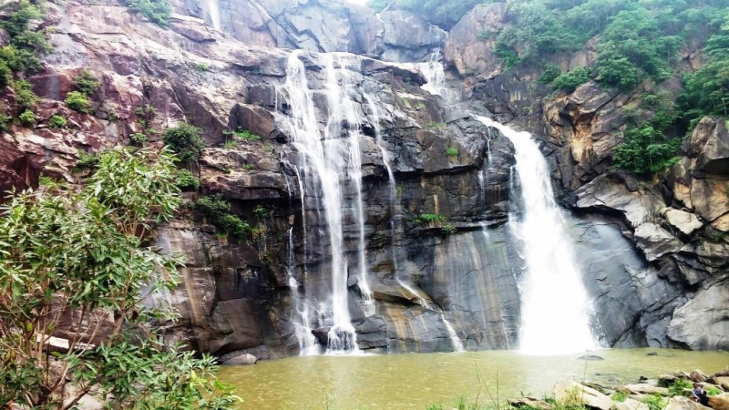
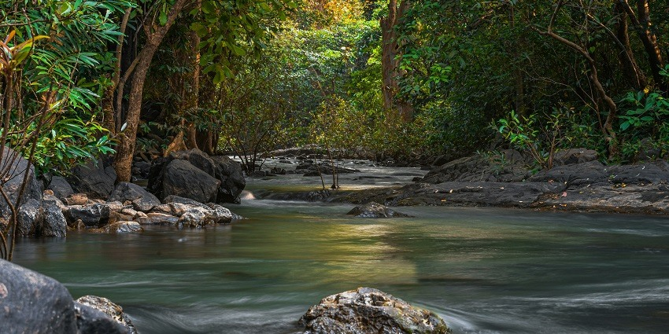
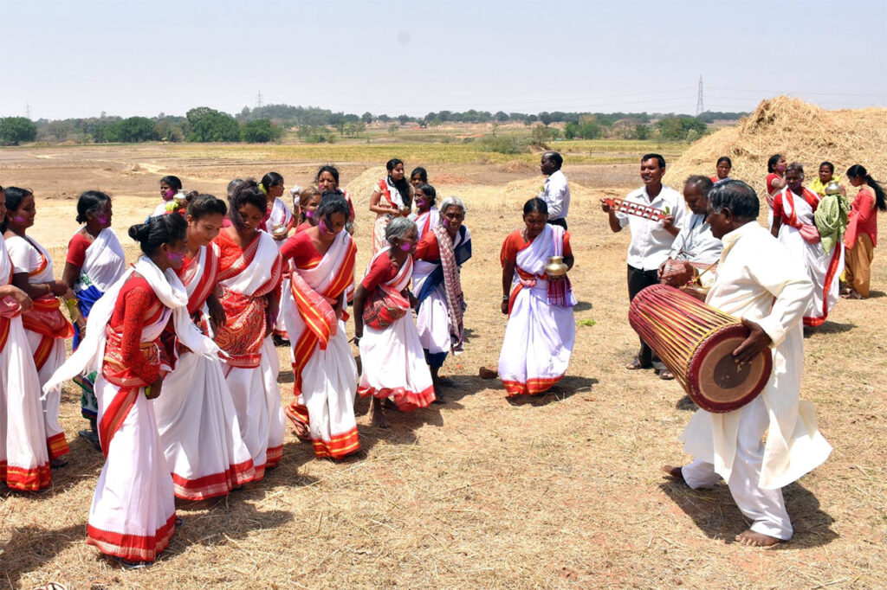
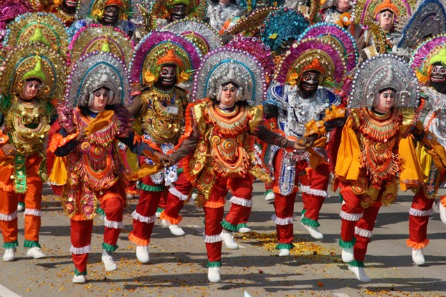

Land of Forests, Tribes & Rich Folklore

One of the highest waterfalls in India, formed by the Subarnarekha River. A natural wonder surrounded by lush forests.

A beautiful wildlife reserve with hills, forests, and ancient forts. It showcases Jharkhand's biodiversity and tribal heritage.

Jharkhand is home to rich tribal traditions like Sarhul, Karma, and Sohrai festivals. Folk music, dances, and rituals preserve tribal folklore.

A UNESCO-recognized martial dance form combining grace, energy, and storytelling. It is performed during festivals and cultural events.